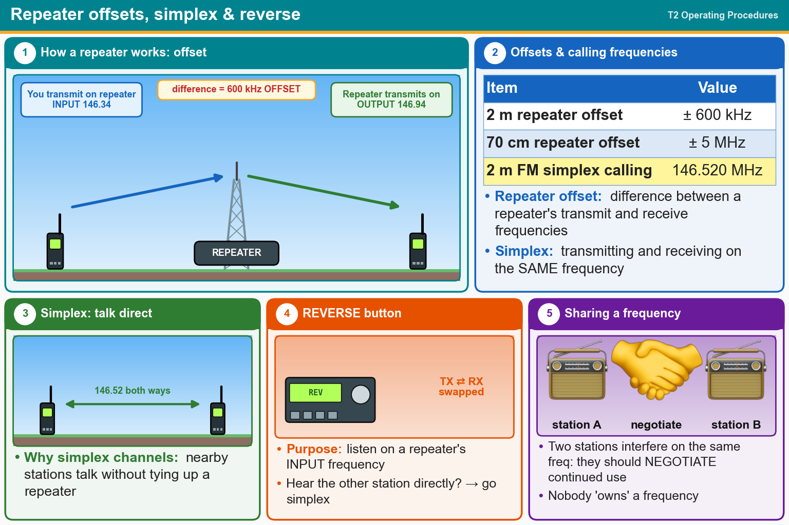

💡 Repeaters listen on one frequency and talk on another. 2 m offset = 600 kHz, 70 cm = 5 MHz. Simplex = same frequency.
Press Check on any question to see if you're right (it won't show the answer), or Grade at the bottom to grade the whole page.
T2A07
What does the term "repeater offset" mean?
✔A.The difference between a repeater’s transmit and receive frequencies
✘B.The approximately half-second delay to allow for the “squelch tail” to be removed
✘C.The fee charged by the repeater owner or club to provide for maintenance
✘D.The repeater has a time delay to prevent interference
T2A01
What is a common repeater frequency offset in the 2-meter band?
✘A.Plus or minus 5 MHz
✘B.Plus or minus 1 MHz
✔C.Plus or minus 600 kHz
✘D.Plus or minus 500 kHz
T2A03
What is a common repeater frequency offset in the 70-centimeter band?
✘A.Plus or minus 600 kHz
✔B.Plus or minus 5 MHz
✘C.Plus or minus 500 kHz
✘D.Plus or minus 1 MHz
T2A02
What is the national calling frequency for FM simplex operations in the 2-meter band?
✘A.432.100 MHz
✘B.145.000 MHz
✔C.146.520 MHz
✘D.446.000 MHz
T2A11
What term describes an amateur station that is transmitting and receiving on the same frequency?
✔A.Simplex
✘B.Diplex
✘C.Multiplex
✘D.Full duplex
T2B09
Why are simplex channels designated in the VHF/UHF band plans?
✔A.So stations within range of each other can communicate without tying up a repeater
✘B.So stations with simple transmitters can access the repeater without automated offset
✘C.For working DX only
✘D.For contest operation
T2B01
What is the purpose of the reverse function on a VHF/UHF transceiver?
✘A.To reduce power output
✘B.To increase power output
✘C.To listen on a repeater’s output frequency
✔D.To listen on a repeater’s input frequency
T2B08
Which of the following applies when two stations transmitting on the same frequency interfere with each other?
✘A.Both stations should choose another frequency to avoid conflict
✘B.Whichever station was on the frequency first has preemptive rights to the frequency
✔C.The stations should negotiate continued use of the frequency
✘D.Use subaudible tones so both stations can share the frequency